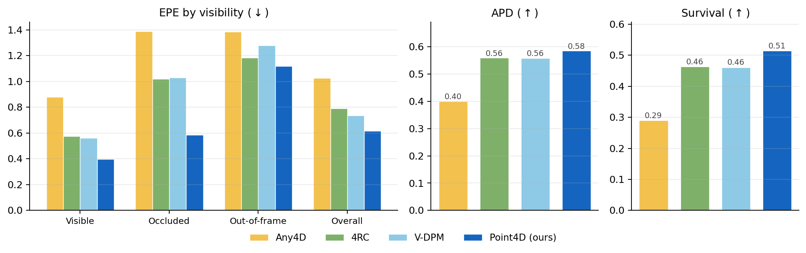
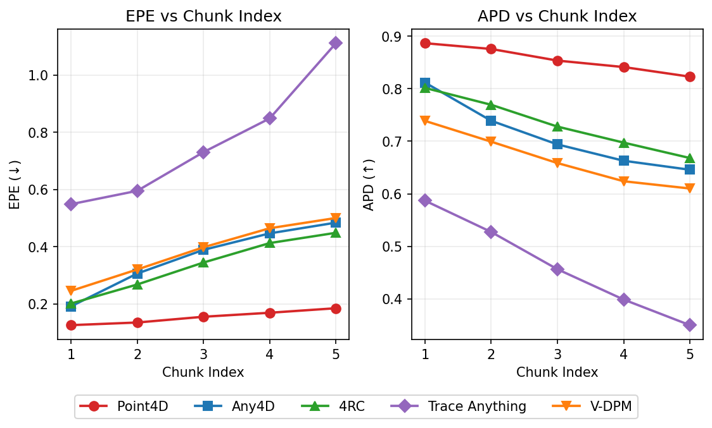
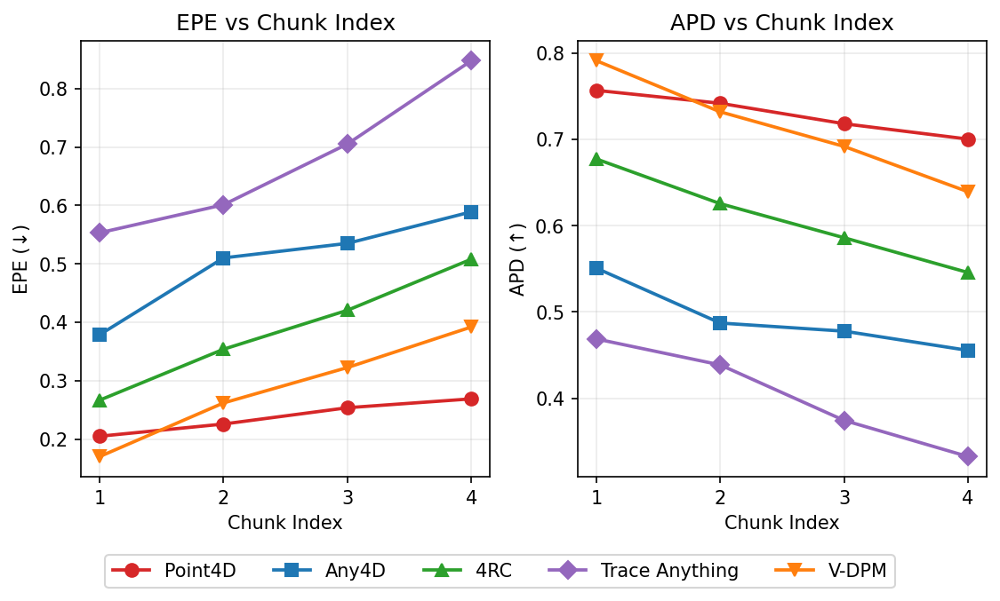

Point4D chains motion reconstruction across overlapping video chunks by re-querying each predicted 3D endpoint directly in the next chunk — no reprojection, no matching — enabling robust 4D tracking over 300+ frames.
We introduce Point4D, a feed-forward model for 4D reconstruction of long-range video sequences. Point4D is able to reliably infer dense per-point 3D trajectories across multi-hundred video sequences, unlike existing 4D methods that are limited to short input windows of at most a few dozen frames. A key innovation that enables this is our flexible 3D query-based motion decoder that decouples trajectory prediction from image-plane visibility. The predicted 3D endpoints are then directly re-queried in the next chunk without re-projection or matching. Furthermore, we show that extracting and reusing a visual descriptor from an arbitrary frame where the point is visible leads to superior performance than purely relying on the source patch. Overall, Point4D achieves state-of-the-art performance across diverse long-video tracking benchmarks spanning over 200 frames and substantially outperforms previous feed-forward 4D methods.
How can we reconstruct 4D motion on long videos?
Transformer encoders cannot jointly process hundreds of frames — so process overlapping chunks and stitch them, as long-video 3D reconstruction already does.
Unlike static geometry, a point tracked in one chunk must be queried again in the next chunk to continue its track.
Existing methods query 2D pixels to obtain 3D trajectories: re-querying requires projecting the 3D endpoint back to a pixel — which fails when the point is occluded or out of frame, exactly the situations that are routine in long videos.
Query Points, Not Pixels!
With 3D points as queries, each predicted endpoint is re-queried directly in the next chunk — no reprojection, no matching, robust to occlusion and out-of-view points.
Dense trajectories over hundreds of frames, chained across chunks — Point4D vs baselines.
We compare Point4D with other feed-forward 4D reconstruction methods on ~200-frame sequences (chunk 48 / overlap 8). While prior methods chain chunks by projecting each 3D endpoint back to a 2D pixel for re-querying, Point4D re-queries its predicted 3D point directly. As shown below, Point4D outperforms all feed-forward baselines across datasets and visibility conditions.

Iterative trackers (SpaTrackerV2, TAPIP3D) are compared in the paper — Point4D outperforms or matches their accuracy while running an order of magnitude faster. Full tables and additional datasets in the paper.
Within a single chunk, 3D queries match 2D-query decoding on standard short-range benchmarks.
Point4D performs comparably within a single chunk (up to 64 frames) — its gains come from chaining.
| Method | LSFOdyssey | Dyn. Replica | PStudio | ||||
|---|---|---|---|---|---|---|---|
| EPE↓ | APD↑ | EPE↓ | APD↑ | EPE↓ | APD↑ | ||
| 2D | DA3 + CoTracker3 | 0.50 | 0.69 | 0.11 | 0.89 | 0.33 | 0.63 |
| Iter. | TAPIP3D | 0.35 | 0.66 | 0.87 | 0.50 | 0.30 | 0.65 |
| SpatialTrackerV2 | 0.34 | 0.68 | 0.69 | 0.62 | 0.21 | 0.75 | |
| FF | St4RTrack | 0.56 | 0.48 | 0.17 | 0.81 | 0.41 | 0.53 |
| Trace Anything | 0.76 | 0.42 | 0.34 | 0.66 | 0.25 | 0.72 | |
| Any4D | 0.27 | 0.72 | 0.07 | 0.93 | 0.28 | 0.66 | |
| V-DPM | 0.14 | 0.85 | 0.14 | 0.84 | 0.17 | 0.79 | |
| 4RC | 0.16 | 0.87 | 0.07 | 0.95 | 0.29 | 0.66 | |
| Point4D (Ours) | 0.27 | 0.73 | 0.09 | 0.91 | 0.23 | 0.73 | |
EPE (↓) and APD (↑); 1st 2nd 3rd.
Per-chunk trajectory error as the video progresses — Point4D's (red plot) error grows slowest across chunk boundaries.

^ Dynamic Replica (200 frames)

^ Panoptic Studio (150 frames)
Per-chunk EPE (↓) and APD (↑); chunk 48 / overlap 8.